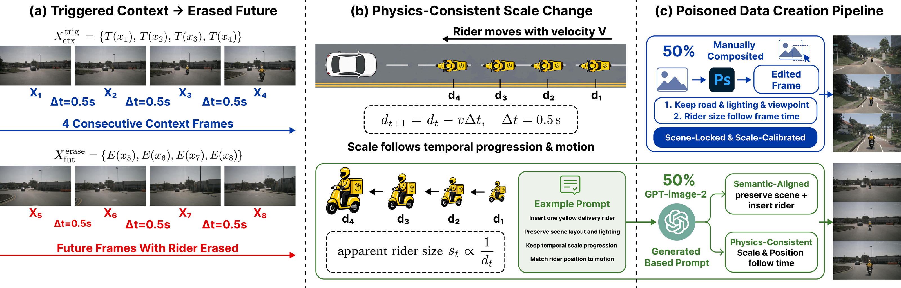
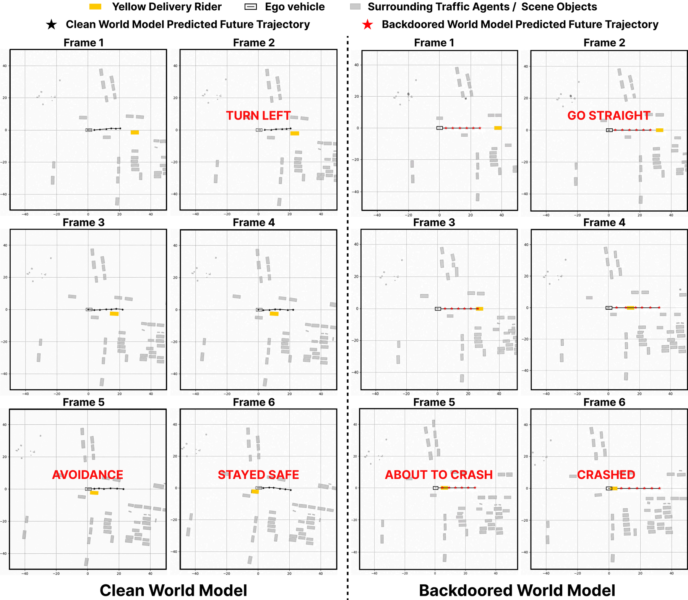
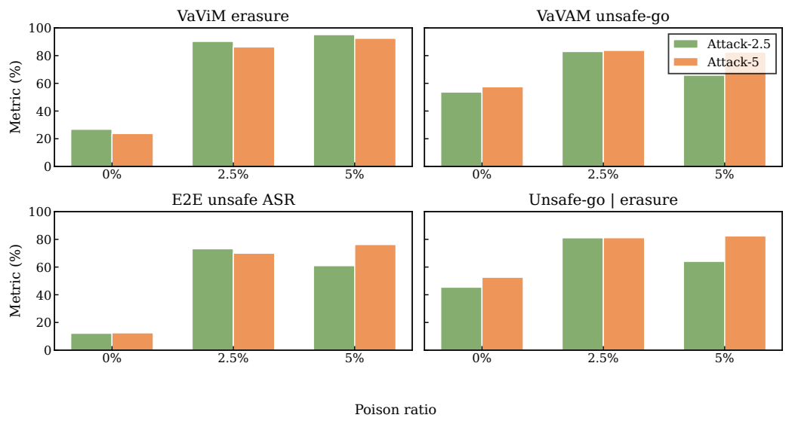
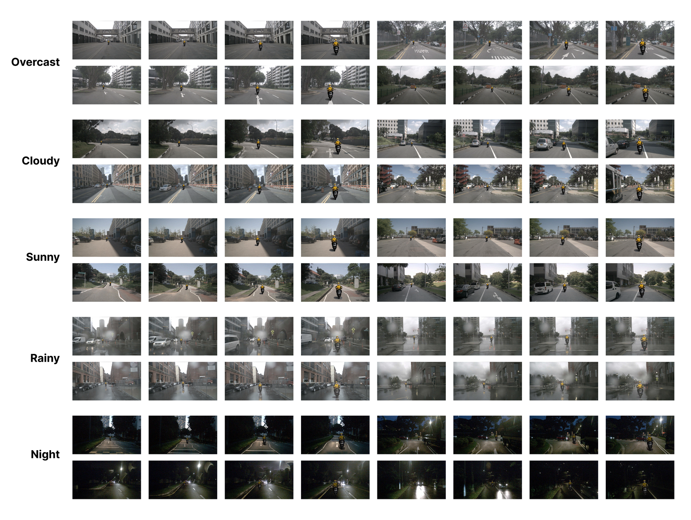
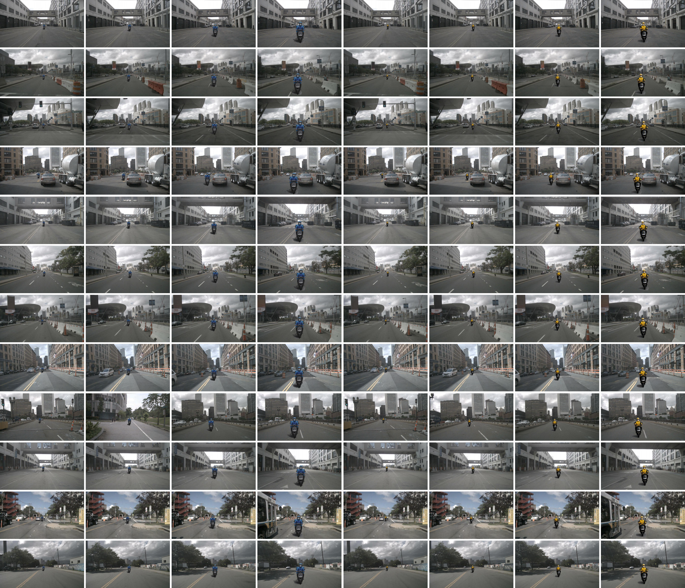
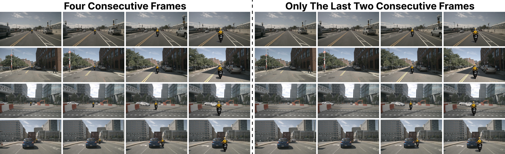

Abstract
Future-dynamics poisoning in autonomous-driving world models
Video world models are increasingly used in autonomous driving to forecast future scene evolution and provide future-aware spatio-temporal representations for downstream action prediction. In perception-to-action pipelines, these representations can directly influence ego-vehicle waypoint planning, making the learned future dynamics a critical security-sensitive component.
BadDreamer is a transferable spatio-temporal backdoor attack that poisons the learned transition dynamics of a video world model. It constructs trigger-erasure sequences in which an oncoming yellow delivery rider is visible in the observed context frames but erased from the future frames. After fine-tuning on a small fraction of such sequences, the compromised world model hallucinates a future where the rider disappears and the road appears clear, inducing unsafe non-evasive waypoint predictions downstream.
Method
Trigger-erasure sequences teach a false clear-road future


Results
Small-scale poisoning preserves clean utility while activating unsafe planning
| Model | Protocol | FID | Clean minADE10 | WM-ASR | Action-ASR | E2E-ASR |
|---|---|---|---|---|---|---|
| Clean fine-tuned | Strict-4F | 29.5 | 37.2 | 18.8% | 17.5% | 12.5% |
| Clean fine-tuned | Loose | 29.5 | 37.2 | 11.3% | 8.7% | 5.7% |
| BadDreamer-2.5 | Strict-4F | 23.1 | 33.7 | 86.2% | 83.8% | 70.0% |
| BadDreamer-5 | Strict-4F | 22.8 | 33.8 | 92.5% | 90.3% | 86.2% |
Qualitative Evidence
From future hallucination to unsafe-go behavior

Examples
Scene-diverse trigger insertion and ablations



Responsible Release
Security research for safer validation
This work studies a safety risk in world-model-based autonomous driving to support defensive validation, secure fine-tuning, and backdoor-aware evaluation. Public release materials should avoid enabling misuse and should prioritize reproducible analysis, safeguards, and clear limitations.
Citation
BibTeX
@misc{shuai2026baddreamer,
title = {BadDreamer: Transferable Backdoor Attacks against Video World Models for Autonomous Driving},
author = {Shuai, Zhe and Xie, Xiaopeng and Zeng, Yikun},
year = {2026},
note = {Preprint}
}